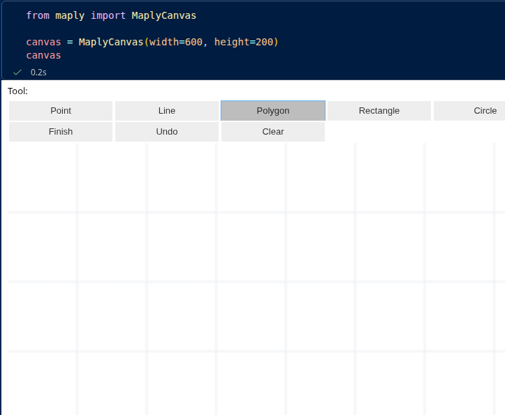
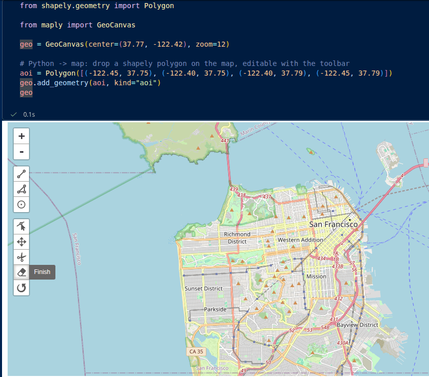

maply
Draw shapes, have fun. For geospatial engineers who need shapes for minimal reproducible examples and algorithm tests. A Jupyter widget for drawing and exporting shapes as a shapely, WKT, GeoJSON, or GeoDataFrame.
github.com/austinbreunig/maplyGeospatial data is inherently visual, yet our way of developing it, is not. Furthermore, geospatial data is complex, incredibly tedious, and unique. Too many times have I missed edge cases because I wasn't able to 'see' the data and conceptualize the problem or the applied solution. When building tests or minimal-reproducible-examples, it becomes frustratingly difficult to prepare test data. maply aims to relieve some of that frustration and allow for quicker prototyping.
Two canvases


Draw, then export
canvas.wkt
canvas.geojson
canvas.geometries
canvas.to_geodataframe()Python to map
This visual did not load. Open it on its own page.
How it's built
A pure-Python core (model, tools, transform, interaction, geometry) plus thin widget wrappers (render, widget, geocanvas). Tools: ipycanvas, ipyleaflet with Geoman, shapely.
The drawing logic has no widget imports, so it is unit-tested without a Jupyter kernel.
Status
Alpha. MaplyCanvas has no CRS.